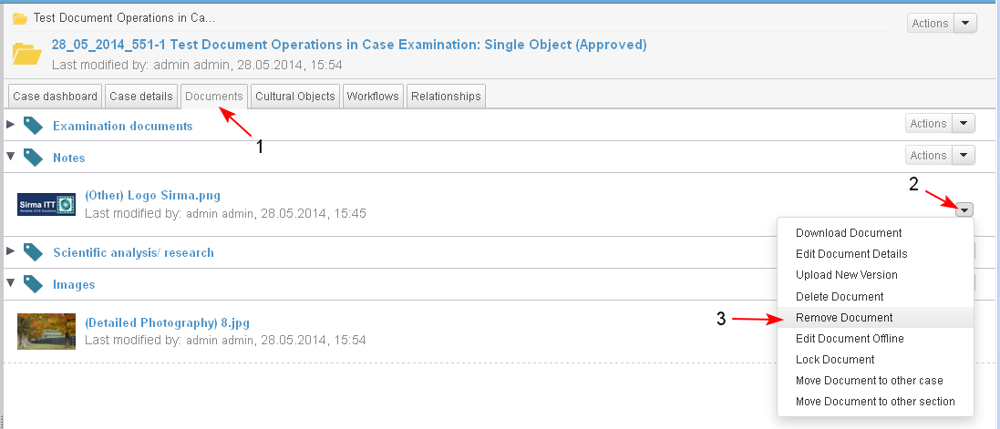
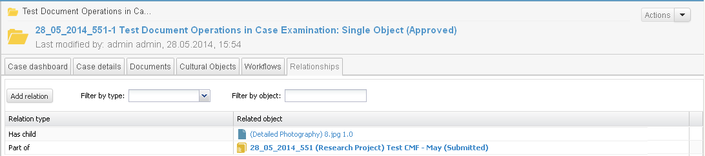

The action "Remove Document" from case is performed on added documents in project/ case and is available for users with corresponding permissions.
- The user starts the action from :
- Documents dashlet /drop down menu of actions for an added document.
- page Documents/ drop down menu of actions for an added document in a selected section/ Remove Document (1-2-3).

- A confirmation message is displayed. The user confirms the operation.

- The document is removed and is no more displayed in the the case section.

- The relation between the case and the document is deleted.

- After the operation "Remove Document" the document still could be found in the document library.